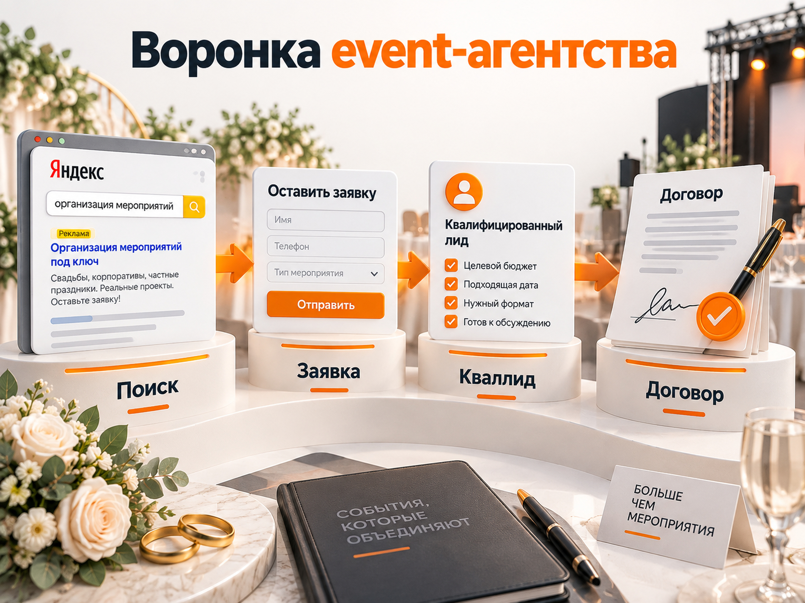

Блог о платном трафике
Как продвигать event-агентство в Яндекс Директе
Яндекс Директ хорошо подходит для продвижения организации мероприятий, потому что позволяет перехватывать уже сформированный спрос: человек ищет свадебное агентство, организацию корпоратива, детского дня рождения или праздник под ключ.
Но есть важная особенность: свадьбы, корпоративы и частные праздники нельзя считать одной нишей. У них разная аудитория, стоимость заказа, цикл принятия решения и критерии выбора подрядчика. Поэтому я бы не объединял все направления в одну рекламную кампанию и одну универсальную страницу.
Для нормального запуска нужны отдельные предложения под основные направления, Яндекс Метрика, передача качества лидов из CRM и раздельная оценка не только стоимости заявки, но и стоимости квалифицированного обращения и договора.
Свежие российские кейсы показывают большой разброс результатов. Заявка на частный праздник может стоить около 1 000-3 000 ₽, а квалифицированный B2B-лид на организацию корпоративного мероприятия в Москве - более 6 000 ₽. Это не противоречие, а следствие разной экономики продуктов.
Свадьбы, корпоративы и праздники нужно рекламировать отдельно
Формально все эти услуги относятся к организации мероприятий. С точки зрения рекламы это три разных типа спроса.
| Направление | Кто принимает решение | Что обычно важно |
|---|---|---|
| Свадьбы | молодожёны, иногда родители | портфолио, стиль, доверие, бюджет, опыт |
| Частные праздники | родители, семьи, частные заказчики | цена, программа, свободная дата, быстрый заказ |
| Корпоративы | собственник, HR, офис-менеджер, маркетолог | опыт B2B, смета, документы, сроки, масштаб |
Поэтому запросы «свадебное агентство», «организация детского дня рождения» и «организация корпоратива для компании» не должны вести на одну одинаковую страницу с общим текстом «организуем любые мероприятия».
Для свадеб важны реальные проекты, фотографии, видео, концепции и ощущение надёжности.
Для частных праздников можно сильнее работать конкретными программами, форматами и ценовыми предложениями.
Для корпоративов нужен B2B-подход: кейсы компаний, количество гостей, технические возможности, договор, безналичная оплата, закрывающие документы и понятный процесс согласования.
Чем выше минимальный бюджет мероприятия, тем полезнее обозначить его на сайте. Это уменьшает количество заявок от людей, которым услуга изначально не подходит.
Что показывают свежие кейсы Яндекс Директа
Свежих публичных кейсов именно по event-агентствам с полной воронкой до договора немного. Кроме того, авторы считают разные события: где-то обычную заявку, где-то конверсию Метрики, а где-то уже квалифицированный лид. Поэтому напрямую сравнивать все CPL нельзя.
В кейсе свадебного агентства Москвы и Московской области, обновлённом в марте 2026 года, до оптимизации лид стоил более 6 000 ₽. На первый месяц после перезапуска выделили около 300 000 ₽ и получили 128 конверсий. Расчётная стоимость одной конверсии составляет примерно 2 344 ₽. В этом проекте РСЯ сработала эффективнее Поиска почти в два раза, при этом авторы не заметили существенной разницы в качестве заявок.
В другом кейсе по организации частных праздников после настройки аналитики, расширения семантики и запуска дополнительных направлений получили 173 лида по 965 ₽. До изменений заявка стоила 2 692 ₽. Важная деталь: сначала Метрику связали с CRM и исправили фиксацию заявок, потому что до этого алгоритмы оптимизировались по некорректным данным.
В Ярославле в августе 2026 года проект по организации праздников потратил 29 126 ₽ и получил 11 заявок. Опубликованная стоимость заявки - 2 648 ₽.
Совсем другая экономика у корпоративного направления. В московском кейсе за октябрь 2025 года при расходе 87 488 ₽ было получено 13 квалифицированных лидов. Стоимость квалифицированного лида составила 6 729 ₽.
Получается не «средний CPL в event-сфере», а несколько разных рынков внутри одной тематики.
Какой спрос есть на организацию свадеб
По данным Wordstat, приведённым в свежем исследовании от августа 2026 года, запрос «свадебное агентство» имел около 6,7 тыс. показов, «организация свадьбы» - около 8,4 тыс., а более узкий «организация свадьбы под ключ» - около 487 показов. Для Москвы отдельно приводится около 660 показов по запросу «свадебное агентство москва».
Это хорошо показывает специфику ниши. Спрос есть, но действительно горячих запросов намного меньше, чем общего информационного и смежного трафика.
Нельзя просто взять фразу «свадьба» или «организация свадьбы» и рассчитывать, что каждый переход будет потенциальным заказчиком агентства.
В поисковых запросах появятся люди, которые ищут:
- свадебные платья;
- ведущих;
- фотографов;
- площадки;
- рестораны;
- декораторов;
- сценарии;
- идеи;
- поздравления;
- работу и вакансии;
- самостоятельную организацию свадьбы.
Поэтому отчёт по реальным поисковым запросам здесь важнее огромного первоначального списка ключевых слов.
Сезонность event-сферы
У свадеб есть выраженная сезонность. Официальная статистика разных российских регионов стабильно показывает рост количества регистраций летом и в начале осени, особенно в июле и августе. Например, по итогам 2024 года максимальное число браков в одном из регионов пришлось на июль и август.
Но рекламный спрос нельзя включать только в момент проведения свадеб. Агентство выбирают заранее, поэтому бюджет нужно усиливать до фактического высокого сезона.
У корпоративов другая сезонность. Один из самых заметных периодов - подготовка новогодних мероприятий. В кейсе московского организатора корпоративов данные отдельно анализировались за октябрь, то есть уже в период активного предновогоднего спроса.
Частные дни рождения и детские праздники менее привязаны к одному короткому сезону и могут давать более равномерный поток заявок.
Поэтому общий годовой бюджет event-агентства лучше планировать не одинаковыми суммами каждый месяц, а по направлениям и сезонности.
Какой сайт нужен для Яндекс Директа
Я бы не вёл весь рекламный трафик на главную страницу event-агентства, если компания занимается сразу несколькими типами мероприятий.
Минимальная структура:
- организация свадеб;
- корпоративные мероприятия;
- частные праздники;
- детские праздники, если это отдельное крупное направление.
Каждая страница должна отвечать именно на запрос своего клиента.
Для свадебной страницы нужны реальные свадьбы, фотографии, видео, пример процесса работы, команда, отзывы и понятная информация о бюджете.
Для корпоративов нужны выполненные проекты, известные заказчики, возможности по количеству участников, форматы мероприятий, работа по договору и примеры смет или состава услуги.
Для частных праздников хорошо работают конкретные программы, сценарии, фотографии, продолжительность, возраст аудитории и понятная стоимость или минимальный бюджет.
Фотографии в этой нише имеют особенно большое значение. Стоковые люди с бокалами почти ничего не доказывают. Реальные мероприятия одновременно показывают качество услуги и работают как портфолио.
Что настроить в аналитике до запуска
Обычной цели «форма отправлена» недостаточно.
Я бы строил воронку так:
реклама -> обращение -> квалифицированный лид -> расчёт или встреча -> договор
На сайте нужно отслеживать как минимум:
- отправку формы;
- звонки;
- обращения через мессенджеры;
- отправку квиза.
В CRM желательно сохранять:
- тип мероприятия;
- дату;
- город;
- количество гостей;
- ориентировочный бюджет;
- результат разговора;
- квалифицирован лид или нет;
- договор;
- сумму сделки.
Особенно важно передавать обратно в Метрику квалифицированные лиды и сделки. Тогда рекламную кампанию можно анализировать не только по дешёвым формам, но и по тому, какие источники действительно приводят подходящих заказчиков.
Подробнее этот механизм разобран в материале «Офлайн-конверсии в Яндекс Директ и Метрике».
Как настраивать Яндекс Директ для event-агентства
Поиск
Поиск я бы запускал с самого начала. Здесь находятся люди, которые уже сформулировали потребность.
Для свадеб это запросы типа:
- свадебное агентство;
- организация свадьбы;
- свадьба под ключ;
- организатор свадьбы;
- организация свадьбы + город.
Для корпоративного направления:
- организация корпоративов;
- организация корпоративных мероприятий;
- event-агентство для корпоратива;
- новогодний корпоратив под ключ;
- организация тимбилдинга, если агентство оказывает такую услугу.
Для частных праздников:
- организация дня рождения;
- праздник под ключ;
- организация юбилея;
- организация детского праздника.
При этом я бы разделял разные типы мероприятий хотя бы по группам, а при достаточном объёме данных - по отдельным кампаниям.
Постоянно нужно проверять реальные поисковые запросы. В свежем московском кейсе по корпоративам отдельно отмечалась проблема семантически близкого, но фактически нерелевантного трафика. Например, вместо организации корпоратива система могла приводить запросы на отдельного ведущего.
РСЯ
Для event-сферы РСЯ имеет смысл тестировать обязательно.
Это визуальная услуга. Хорошая фотография реальной свадьбы, корпоратива, декора или детского шоу способна объяснить предложение быстрее текста.
Я бы тестировал:
- реальные фотографии мероприятий;
- короткие видео;
- конкретные форматы праздников;
- разные визуалы для свадеб и корпоративов;
- ретаргетинг посетителей сайта;
- сегменты Метрики;
- интересы и привычки.
При этом правило «Поиск всегда качественнее РСЯ» здесь не работает. В свежем свадебном кейсе именно сети дали более дешёвые конверсии без заметного ухудшения качества лидов.
Мастер кампаний
Мастер кампаний можно запускать как отдельную гипотезу, особенно если нужно получить дополнительный объём.
Но я бы не строил всё продвижение только на нём. Нужна возможность отдельно видеть результаты Поиска, РСЯ, разных направлений и качества заявок.

Комбинаторные объявления
На сентябрь 2026 года для новых объявлений ЕПК нужно учитывать переход Яндекс Директа на комбинаторный формат.
С 30 июня новые текстово-графические объявления в ЕПК больше не создаются, а с 14 июля Яндекс начал перевод существующих объявлений в комбинаторные. В одном таком объявлении можно использовать несколько заголовков, текстов, изображений и видео, а система сама собирает и тестирует сочетания.
Для event-сферы это удобно: можно одновременно загрузить несколько реальных фотографий мероприятий и несколько офферов, а затем анализировать результат отдельных элементов.
Карты и Галерея услуг
Организация мероприятий входит в категории, которые Яндекс поддерживает в Галерее услуг. Для локального event-бизнеса также стоит нормально заполнить карточку Яндекс Бизнеса: фотографии, услуги, контакты, отзывы и сайт.
Это дополнительный источник спроса, но не замена основной рекламе на Поиске и в РСЯ.
Какую стратегию выбрать
Я бы не включал автоматически оплату за конверсии только потому, что она выглядит безопаснее.
Если новое направление получает несколько заявок в неделю, системе может не хватить статистики для устойчивой оптимизации.
Свежий свадебный кейс хорошо показывает эту проблему: до перезапуска автоматические кампании были раздроблены и не успевали нормально обучаться, а стоимость лида превышала 6 000 ₽.
Поэтому не стоит создавать десяток отдельных кампаний под каждую разновидность праздника, если бюджет небольшой.
Сначала нужно собрать достаточный объём качественных данных. После этого можно активнее оптимизироваться на конверсии и, что ещё лучше, на квалифицированные обращения.
Подробнее про выбор стратегии и необходимый объём данных - в статье «Какую стратегию выбрать в Яндекс Директ».
Какой CPL и бюджет заложить на старте
Одного рыночного CPL для event-сферы нет. На основании свежих опубликованных кейсов я бы использовал следующие диапазоны только как стартовую модель для медиаплана, а не как норматив рынка.
| Направление | Рабочий ориентир | Стартовый рекламный бюджет |
|---|---|---|
| Частные праздники | 1 500-3 000 ₽ за обычный лид | 30 000-60 000 ₽ |
| Свадебное агентство | 2 500-6 000 ₽ за заявку или конверсию | 50 000-100 000 ₽ в регионе, выше в Москве |
| Корпоративные мероприятия | 5 000-9 000 ₽ за квалифицированный лид | примерно 80 000-150 000 ₽ для конкурентного крупного города |
Диапазон по частным праздникам опирается в том числе на опубликованные значения 965 ₽ после оптимизации и 2 648 ₽ в региональном проекте. По свадьбам свежий московский кейс дал расчётные 2 344 ₽ за конверсию при предыдущем результате более 6 000 ₽. По корпоративам есть свежий московский результат 6 729 ₽ именно за квалифицированный лид.
Это принципиально разные метрики. Квалифицированный лид почти всегда должен стоить дороже обычной отправленной формы.
Как рассчитать бюджет под нужное количество клиентов
Бюджет лучше считать от продаж назад, а не от суммы, которую «не жалко попробовать».
Допустим, агентству нужно получить 10 новых заказов.
Если из лида в договор превращается 20% обращений:
10 / 20% = 50 лидов.
Если рабочий CPL составляет 3 500 ₽:
50 × 3 500 ₽ = 175 000 ₽.
Получаем расчётный рекламный бюджет 175 000 ₽.
Но если продажи закрываются только из 10% лидов, тот же план потребует уже 100 лидов и 350 000 ₽.
Поэтому без фактической конверсии отдела продаж точный прогноз бюджета сделать невозможно.
Я бы контролировал минимум три показателя:
- CPL = рекламный расход / все лиды;
- стоимость квалифицированного лида = рекламный расход / квалифицированные лиды;
- CAC = рекламный расход / новые клиенты.
Отдельно о том, почему нельзя ориентироваться на абстрактную «среднюю конверсию», есть статья «Конверсия лидов в продажи».
Что чаще всего мешает рекламе окупаться
Первая ошибка - рекламировать все услуги одним предложением. Человек ищет свадьбу, а попадает на страницу, где рядом детский аниматор, конференция и выпускной.
Вторая - оптимизироваться только на отправку формы. Дешёвых заявок может стать больше, но среди них окажется много заказов с неподходящим бюджетом.
Третья - скрывать ценовой сегмент. Если агентство работает только с мероприятиями от определённого бюджета, это лучше обозначить до заявки.
Четвёртая - вести Поиск по слишком широким запросам и редко смотреть отчёт по поисковым фразам.
Пятая - использовать в РСЯ одинаковые универсальные картинки вместо реальных свадеб, корпоративов и праздников.
Шестая - оценивать рекламу только по CPL. Например, кампания с лидами по 2 000 ₽ может быть хуже кампании с лидами по 5 000 ₽, если во втором случае намного больше обращений доходят до договора.
Пошаговый запуск
Я бы запускал продвижение event-агентства в следующем порядке:
- Разделить свадьбы, корпоративы и частные праздники.
- Определить минимальный выгодный бюджет заказа по каждому направлению.
- Подготовить отдельные посадочные страницы.
- Настроить Метрику, звонки и CRM.
- Создать цели обычного и квалифицированного лида.
- Запустить Поиск по прямому коммерческому спросу.
- Отдельно запустить РСЯ с реальными фотографиями и видео.
- Протестировать Мастер кампаний как дополнительный источник.
- Каждую неделю анализировать поисковые запросы, аудитории, площадки, креативы и качество обращений.
- Передавать квалификацию и договоры обратно в аналитику.
- Масштабировать только те направления, которые дают приемлемую стоимость клиента, а не просто много форм.
Итог
Яндекс Директ подходит для продвижения свадеб, корпоративов и организации праздников, но универсальной настройки для всей event-сферы нет.
По свежим кейсам обычная заявка может обходиться примерно в 1 000-3 000 ₽, свадебная конверсия - в несколько тысяч рублей, а квалифицированный B2B-лид на корпоративное мероприятие - в 6 000 ₽ и выше. Разница определяется регионом, типом мероприятия, минимальным бюджетом заказа, сайтом и тем, что именно считается лидом.
Главная задача - не добиться минимального CPL. Нужно построить цепочку «реклама -> квалифицированный лид -> договор» и уже по ней определять допустимый рекламный бюджет.